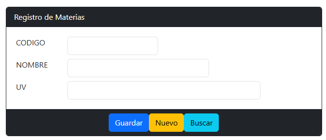

Sistema Académico
QA (Quality Assurance)Objetivo
Objetivo: Entregar una plataforma académica estable y escalable que permita la gestión de estudiantes y calificaciones con alta confiabilidad.
Proceso de trabajo
Proceso: Revisión de especificaciones, planificación de pruebas, ejecución de pruebas funcionales, reporte y verificación de correcciones, despliegue y monitoreo.

Tecnologías utilizadas
Competencias técnicas
Resultados
Evidencias claras
